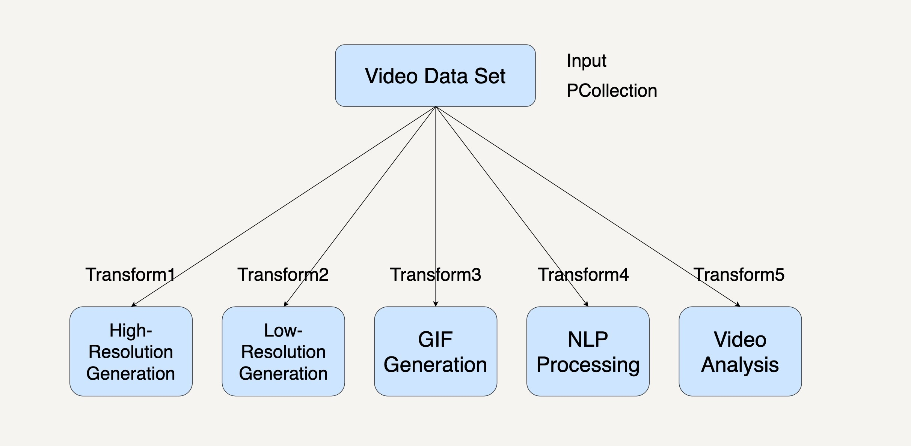
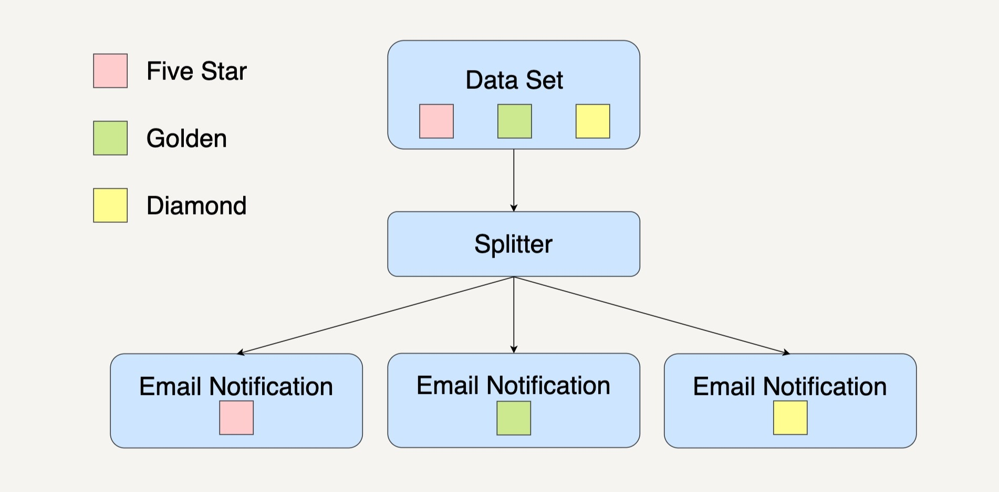
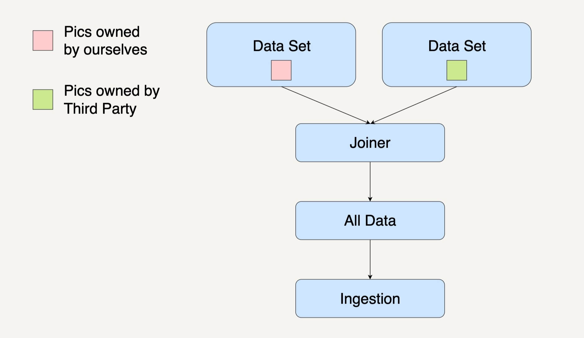

- 00 开篇词 从这里开始，带你走上硅谷一线系统架构师之路.md
- 01 为什么MapReduce会被硅谷一线公司淘汰？.md
- 02 MapReduce后谁主沉浮：怎样设计下一代数据处理技术？.md
- 03 大规模数据处理初体验：怎样实现大型电商热销榜？.md
- 04 分布式系统（上）：学会用服务等级协议SLA来评估你的系统.md
- 05 分布式系统（下）：架构师不得不知的三大指标.md
- 06 如何区分批处理还是流处理？.md
- 07 Workflow设计模式：让你在大规模数据世界中君临天下.md
- 08 发布_订阅模式：流处理架构中的瑞士军刀.md
- 09 CAP定理：三选二，架构师必须学会的取舍.md
- 10 Lambda架构：Twitter亿级实时数据分析架构背后的倚天剑.md
- 11 Kappa架构：利用Kafka锻造的屠龙刀.md
- 12 我们为什么需要Spark？.md
- 13 弹性分布式数据集：Spark大厦的地基（上）.md
- 14 弹性分布式数据集：Spark大厦的地基（下）.md
- 15 Spark SQL：Spark数据查询的利器.md
- 16 Spark Streaming：Spark的实时流计算API.md
- 17 Structured Streaming：如何用DataFrame API进行实时数据分析_.md
- 18 Word Count：从零开始运行你的第一个Spark应用.md
- 19 综合案例实战：处理加州房屋信息，构建线性回归模型.md
- 20 流处理案例实战：分析纽约市出租车载客信息.md
- 21 深入对比Spark与Flink：帮你系统设计两开花.md
- 22 Apache Beam的前世今生.md
- 23 站在Google的肩膀上学习Beam编程模型.md
- 24 PCollection：为什么Beam要如此抽象封装数据？.md
- 25 Transform：Beam数据转换操作的抽象方法.md
- 26 Pipeline：Beam如何抽象多步骤的数据流水线？.md
- 27 Pipeline IO Beam数据中转的设计模式.md
- 28 如何设计创建好一个Beam Pipeline？.md
- 29 如何测试Beam Pipeline？.md
- 30 Apache Beam实战冲刺：Beam如何run everywhere_.md
- 31 WordCount Beam Pipeline实战.md
- 32 Beam Window：打通流处理的任督二脉.md
- 33 横看成岭侧成峰：再战Streaming WordCount.md
- 34 Amazon热销榜Beam Pipeline实战.md
- 35 Facebook游戏实时流处理Beam Pipeline实战（上）.md
- 36 Facebook游戏实时流处理Beam Pipeline实战（下）.md
- 37 5G时代，如何处理超大规模物联网数据.md
- 38 大规模数据处理在深度学习中如何应用？.md
- 39 从SQL到Streaming SQL：突破静态数据查询的次元.md
- 40 大规模数据处理未来之路.md
- FAQ第一期 学习大规模数据处理需要什么基础？.md
- FAQ第三期 Apache Beam基础答疑.md
- FAQ第二期 Spark案例实战答疑.md
- 加油站 Practice makes perfect！.md
- 结束语 世间所有的相遇，都是久别重逢.md
28 如何设计创建好一个Beam Pipeline？
你好，我是蔡元楠。
今天我要与你分享的主题是“如何设计创建好一个Beam Pipeline”。
这一讲我们会用到第7讲中介绍过的四种常见设计模式——复制模式、过滤模式、分离模式和合并模式。这些设计模式就像是武功的基本套路一样，在实战中无处不在。今天，我们就一起来看看我们怎么用Beam的Pipeline来实现这些设计模式。
设计Pipeline的基本考虑因素
在设计Pipeline时，你需要注意4条基本的考虑因素。
1.输入数据存储在哪里？
输入数据是存储在云存储文件系统，还是存储在一个关系型数据库里？有多大的数据量？这些都会影响你的pipeline设计是如何读入数据的。上一讲已经讲到过，Pipeline的数据读入是使用Read这个特殊的Transform。而数据读入往往是一个Pipeline的第一个数据操作。
2.输入数据是什么格式？
输入数据是纯文本文件？还是读取自关系型数据库的行？还是结构化好的特殊数据结构？这些都会影响你对于PCollection的选择。比如，如果输入数据是自带key/value的结构，那你用Beam的key/value为元素的PCollection能更好的表示数据。
3.这个pipeline你打算对数据进行哪些操作？
提前想好要做哪些数据操作，可以帮助你设计好Transform。可能你也会使用一些Beam提供的Transform或者是你的团队共用的一些Transform。
4.输出数据需要是什么样的格式，需要存储到哪里？
和输入数据相同，对于输出数据，我们也要提前判断好业务的需求。看看需要的数据格式是什么样的，是要存储到本地文本文件？还是存储到另一个数据库？
比如，你在跑一个本地批处理作业，就会需要先存到本地看一看。如果你在生成环境有永久性数据库，或者你有结构化的数据，可能更想存储到你的数据库里。
复制模式的Pipeline设计
现在，我们就来看看在第7讲中提到的复制模式（Copier Pattern）的例子是怎么用Beam实现的。这里需要用到第7讲的YouTube视频平台的复制模式案例。这里就简单介绍一下，以便唤醒你的记忆。如果你完全忘记了，我建议你先去做个回顾。
如今的视频平台会提供不同分辨率的视频给不同网络带宽的用户。在YouTube视频平台中，将鼠标放在视频缩略图上时，它会自动播放一段已经生成好的动画缩略图。平台的自然语言理解（NLP）的数据处理模块可以分析视频数据，自动生成视频字幕。视频分析的数据处理模块也可以通过分析视频数据产生更好的内容推荐系统。这使用的就是复制模式。
要想在在Beam中采用复制模式，我们可以用一个PCollection来表示输入的Video data set。将每一种视频处理编写成Transform。最后，多重输出各自为一个PCollection。整个过程就如同下图所示。

你可以从图片中看到，在这个工作流系统中，每个数据处理模块的输入都是相同的，而下面的5个数据处理模块都可以单独并且同步地运行处理。
复制模式通常是将单个数据处理模块中的数据完整地复制到两个或更多的数据处理模块中，然后再由不同的数据处理模块进行处理。当我们在处理大规模数据时，需要对同一个数据集采取多种不同的数据处理转换，我们就可以优先考虑采用复制模式。
比如下面的代码，我们用5个不同的pipeline来表示，它们的作用分别是生成高画质视频、生成低画质视频、生成GIF动画、生成视频字幕、分析视频。
PCollection<Video> videoDataCollection = ...;
// 生成高画质视频
PCollection<Video> highResolutionVideoCollection = videoDataCollection.apply("highResolutionTransform", ParDo.of(new DoFn<Video, Video>(){
@ProcessElement
public void processElement(ProcessContext c) {
c.output(generateHighResolution(c.element()));
}
}));
// 生成低画质视频
PCollection<Video> lowResolutionVideoCollection = videoDataCollection.apply("lowResolutionTransform", ParDo.of(new DoFn<Video, Video>(){
@ProcessElement
public void processElement(ProcessContext c) {
c.output(generateLowResolution(c.element()));
}
}));
// 生成GIF动画
PCollection<Image> gifCollection = videoDataCollection.apply("gifTransform", ParDo.of(new DoFn<Video, Image>(){
@ProcessElement
public void processElement(ProcessContext c) {
c.output(generateGIF(c.element()));
}
}));
// 生成视频字幕
PCollection<Caption> captionCollection = videoDataCollection.apply("captionTransform", ParDo.of(new DoFn<Video, Caption>(){
@ProcessElement
public void processElement(ProcessContext c) {
c.output(generateCaption(c.element()));
}
}));
// 分析视频
PCollection<Report> videoAnalysisCollection = videoDataCollection.apply("videoAnalysisTransform", ParDo.of(new DoFn<Video, Report>(){
@ProcessElement
public void processElement(ProcessContext c) {
c.output(analyzeVideo(c.element()));
}
}));
过滤模式的Pipeline设计
过滤模式（Filter Pattern）也可以用Beam来实现。这里我们先简单回顾一下第7讲的例子。在商城会员系统中，系统根据用户的消费次数、消费金额、注册时间划分用户等级。假设现在商城有五星、金牌和钻石这三种会员。而系统现在打算通过邮件对钻石会员发出钻石会员活动的邀请。

在过滤模式中，一个数据处理模块会将输入的数据集过滤，留下符合条件的数据，然后传输到下一个数据处理模块进行单独处理。
在用Beam实现时，我们把输入的用户群组表达成一个PCollection。输出的钻石会员用户群组也表示成一个PCollection。那么中间的过滤步骤就能编写成一个Transform。如下面代码所示，我们在一个Beam Pipeline里调用isDiamondUser()方法，从所有的用户中过滤出钻石会员。
PCollection<User> userCollection = ...;
PCollection<User> diamondUserCollection = userCollection.apply("filterDiamondUserTransform", ParDo.of(new DoFn<User, User>(){
@ProcessElement
public void processElement(ProcessContext c) {
if (isDiamondUser(c.element()) {
c.output(c.element());
}
}
}));
PCollection<User> notifiedUserCollection = userCollection.apply("notifyUserTransform", ParDo.of(new DoFn<User, User>(){
@ProcessElement
public void processElement(ProcessContext c) {
if (notifyUser(c.element()) {
c.output(c.element());
}
}
}));
分离模式的Pipeline设计
分离模式（Splitter Pattern）与过滤模式不同，并不会丢弃里面的任何数据，而是将数据分组处理。还是以商城会员系统为例。系统打算通过邮件对不同会员发出与他们身份相应的活动邀请。需要通过分离模式将用户按照会员等级分组，然后发送相应的活动内容。

用Beam应该怎么实现呢？我们可以应用第25讲中讲到的side input/output技术。同样的还是把用户群组都定义成不同的PCollection。最终的输出会是三个PCollection。
// 首先定义每一个output的tag
final TupleTag<User> fiveStarMembershipTag = new TupleTag<User>(){};
final TupleTag<User> goldenMembershipTag = new TupleTag<User>(){};
final TupleTag<User> diamondMembershipTag = new TupleTag<User>(){};
PCollection<User> userCollection = ...;
PCollectionTuple mixedCollection =
userCollection.apply(ParDo
.of(new DoFn<User, User>() {
@ProcessElement
public void processElement(ProcessContext c) {
if (isFiveStartMember(c.element())) {
c.output(c.element());
} else if (isGoldenMember(c.element())) {
c.output(goldenMembershipTag, c.element());
} else if (isDiamondMember(c.element())) {
c.output(diamondMembershipTag, c.element());
}
}
})
.withOutputTags(fiveStarMembershipTag,
TupleTagList.of(goldenMembershipTag).and(diamondMembershipTag)));
// 分离出不同的用户群组
mixedCollection.get(fiveStarMembershipTag).apply(...);
mixedCollection.get(goldenMembershipTag).apply(...);
mixedCollection.get(diamondMembershipTag).apply(...);
比如在上面的代码中，我们在processElement()方法中，根据过滤函数，分拆出五星会员，金牌会员和钻石会员。并且把不同的会员等级输出到不同的side output tag中。之后可以在返回的PCollection中用这个side output tag得到想要的输出。
合并模式的Pipeline设计
合并模式（Joiner Pattern）会将多个不同的数据集合成一个总数据集，一并进行处理。之前介绍的合并模式案例是用街头美团外卖电动车的数量来预测美团的股价。
数据接入这一处理模块里，我们的输入数据有自己团队在街道上拍摄到的美团外卖电动车图片和第三方公司提供的美团外卖电动车图片。我们需要先整合所有数据然后进行其它数据处理。

使用Beam合并多个PCollection时，需要用到Beam自带的Flatten这个Transform函数，它的作用是把来自多个PCollection类型一致的元素融合到一个PCollection中去。下面的代码用元素类型为Image的PCollection来表达输入数据和输出数据。
PCollectionList<Image> collectionList = PCollectionList.of(internalImages).and(thirdPartyImages);
PCollection<Image> mergedCollectionWithFlatten = collectionList
.apply(Flatten.<Image>pCollections());
mergedCollectionWithFlatten.apply(...);
例如，在上面的代码示例中，我们把internalImages和thirdPartyImages两个PCollection融合到一起。使用apply(Flatten)这样一个Transform实现多个PCollection的平展。
小结
今天我们一起学习了怎样在Beam中设计实现第7讲介绍的经典数据处理模式，分别是4种设计模式，分别是复制模式、过滤模式、分离模式和合并模式。
在实现这四种数据处理模式的过程中，我们学到了两种Beam Transform的两个重要技术，分别是分离模式中用到的side output，和在合并模式中用到的Flatten。正如前文所说，第7讲的经典数据处理模式就像是武功的基本套路，实战项目中可能80%都是这些基本套路的组合。有了这些小型的模块实现，对我们未来实现大型系统是有很大帮助的。
思考题
在你的项目中有没有这四种设计模式的影子呢？如果有的话你觉得可以怎样用Beam Pipeline实现呢？
欢迎你把答案写在留言区，与我和其他同学一起讨论。如果你觉得有所收获，也欢迎把文章分享给你的朋友。
© 2019 - 2023 Liangliang Lee. Powered by gin and hexo-theme-book.